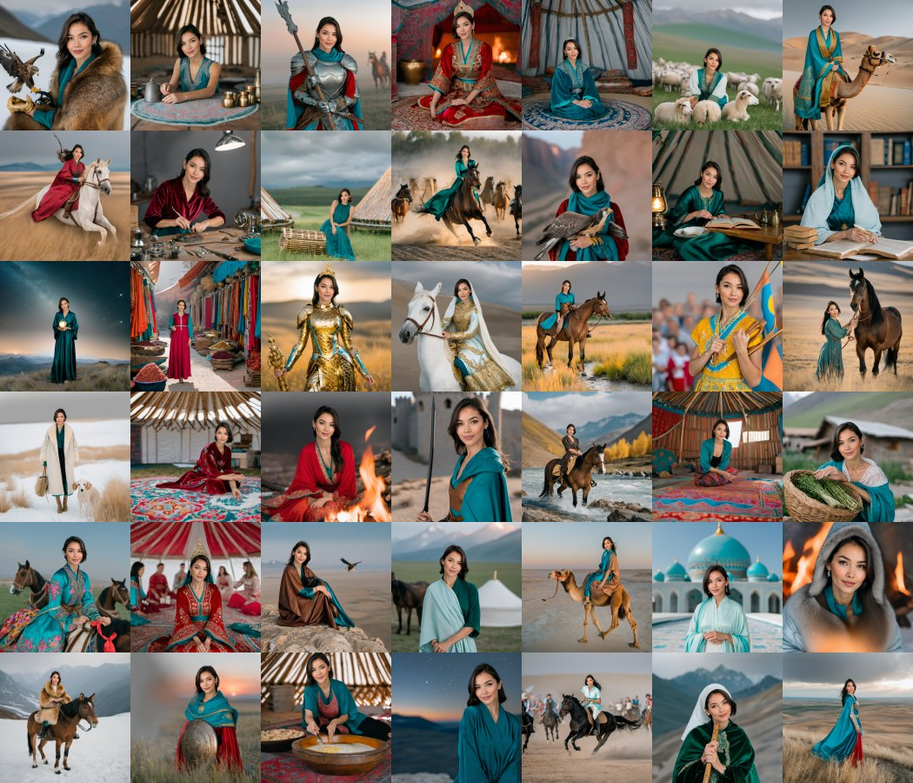

Generation is paused for a few days while we improve portrait quality. Orders reopen soon. Already have an order code? It is safe and will work when we reopen.
Генерация на паузе на несколько дней: улучшаем качество портретов. Код заказа сохранится. · Генерация бірнеше күнге тоқтатылды: портреттердің сапасын жақсартып жатырмыз.
Генерация на паузе на несколько дней: улучшаем качество портретов. Код заказа сохранится. · Генерация бірнеше күнге тоқтатылды: портреттердің сапасын жақсартып жатырмыз.
Who Were You in the Great Steppe?
One photo of your face becomes 43 portraits of you as a nomad of the Great Steppe: rider, eagle hunter, warrior, khan, storyteller, star navigator. Plus a 30-second video with steppe music.
Samples. The faces in them are AI-generated, not real people.
Paused for a few days · get notified when we reopen$9, one payment. Any card, any country. Ready in about 15 to 20 minutes. One free redo included.
How it works
- Pay $9 on Gumroad. Your receipt contains a license key. That key is your order code.
- Open the generator on your phone or computer, choose Man or Woman, upload a close-up photo of your face and paste the code.
- About 15 to 20 minutes later you get the video (MP4) and all 43 portraits (JPG). The result stays online for 72 hours, so download it.

Sample set. Same AI-generated face in every frame.
Good to know
- One free redo. The same code works twice, for example with a better photo.
- Your photo is deleted right after generation. We do not keep it and do not use it for anything else.
- Only your own photo, 18+. No photos of celebrities or children.
- Drawn by AI. The likeness is close but not exact, and details can differ from frame to frame.
- A good photo helps: close-up, facing the camera, even light, no sunglasses.
- Questions or problems: reply to your Gumroad receipt and we will help.
- Ready to share. You also get a short version of the video with a Share button, made for WhatsApp and Instagram.
This is a pilot release
The Great Steppe is our first set, and the second set is open now: Past Lives. Coming next: Space Heroes, Vikings & Fairies. Follow our releases and updates.
Paused for a few days · get notified when we reopen
Made by SUN in Astana, Kazakhstan, on our own hardware. Music: Dala үні (Voice of the Steppe), original music by Khamzin Bauyrzhan Galymzhanovich and AISun · IP SUN.
По-русски и қазақша: окно генератора есть на русском (ссылка RU вверху). Оплата картой любой страны, $9.